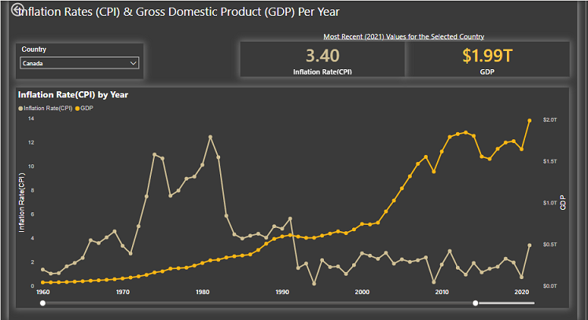

About Me
I had my first degree in Petroleum Engineering where I graduated with a first class and as the overall best student. Owing to my past interests, I have work experience in Sales, Internal Control & Audit, and Engineering.
I started learning data analytics to be more efficient in my last job but then I realized it is in fact what I would love to be doing with my life. So I decided to pivot to data analytics.
I have always been passionate about helping businesses make data-driven decisions. In each of my previous jobs, I used data in one way or the other to provide input that were key to making business decisions and improve business processes.

This project was a capstone of my Google Data Analytics Certificate. I performed exploratory data analysis (EDA) on historical datasets of a fictional bike-sharing company to understand how different categories of riders use the bikes and provided recommendations to the marketing team on how to convert casual riders to members.
The analysis can be found here. I also created an interactive report for the analysis on PowerBI and can be accessed here.

Inflation is an enemy of countries and individuals. It sinks countries to instability and erodes the purchasing power of people.
Inflation is a measure of increase in the prices of a set of goods and services over a period of time, usually a year. It is most widely measured by consumer price index (CPI), which is the cost of different categories of commonly purchased goods and services relative to a base year.
I was curious about the inflation rates for countries, so I did an analysis of world inflation rates open data downloadable from World Bank website. Also, both types of inflation, cost-push and demand-pull, results from the size of a country’s economy relative to money supply, I decided to analyze the Gross Domestic Product (GDP), which is the summation of all goods and services produced in a country during a specific period of time, to see if there’s any correlation. Both datasets are open data downloadable from World Bank website
The reports of the analysis can be found here
Resume

Click here to view/download a copy of my resume.
Contact